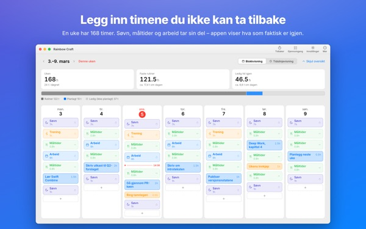
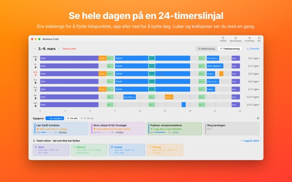
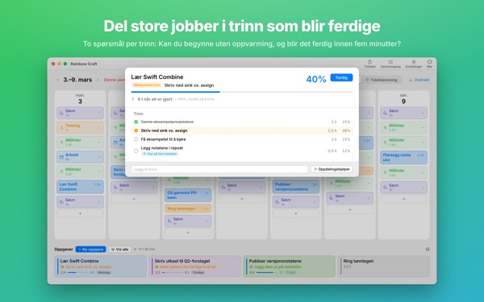
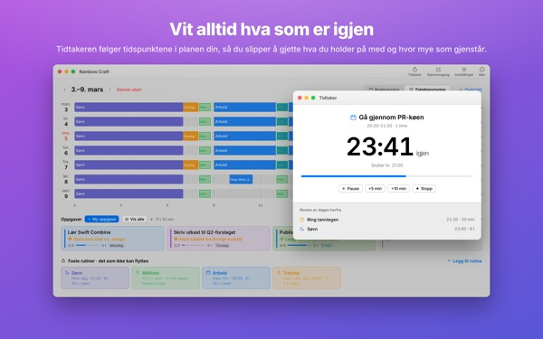
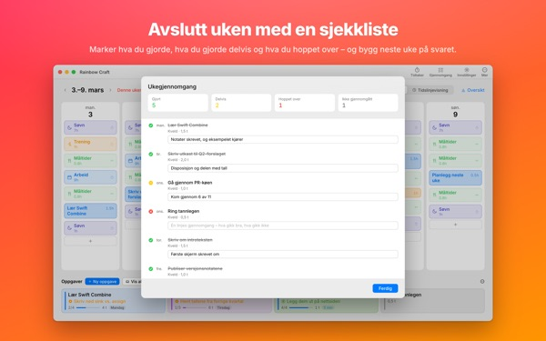

Får alt virkelig
plass denne uka?
Rainbow Craft legger ut uka di på Macen dag for dag og time for time. Start med tiden du ikke kan gi slipp på, som søvn, måltider og arbeid, dra oppgavene inn i hullene og se hva som faktisk får plass.
Planlegging, rutiner, oppgaver, gjennomgang, tidtaker og kalenderimport er gratis.

Planlegg en uke her
Vi har lagt inn de fire rutinene appen foreslår første gang du åpner den. Slå dem av og på, og legg oppgaver på dagene.
Lista vokser. Uka gjør ikke det.
En oppgaveliste sier ikke om uka di klarer å romme den. Når søvn, mat og pendling har tatt sitt, er det mindre igjen enn du tror. Rainbow Craft viser de timene som tall og ruter og lar deg prøve hver oppgave på en ekte plass.
Se en dag på en 24-timers linjal
Tidslinjevisningen legger dagen ut på en linjal over 24 timer. Hull og overlapp ser du med en gang, og du velger hvordan overlappende avtaler skal ligge.
Hent møter og avtaler fra Kalender på Macen i stedet for å skrive dem to ganger. Om du vil, kan planene også havne i en egen Rainbow Craft-kalender som du ser på iPhone. De andre kalenderne dine endres aldri.

Del store jobber i steg som blir ferdige
Store jobber stopper opp når noe fortsatt står i veien. Appen stiller to spørsmål om hvert steg: Kan du starte uten oppvarming? Kan det gjøres ferdig på fem minutter?
Det som består begge, er en bit du kan ta når fem minutter blir ledige. Resten trenger avsatt tid. Tar appen feil, bestemmer du.

Hva du holder på med, og hvor lenge til
Når starttiden kommer, blir planen pågående, og når tiden er ute, spør appen om du ble ferdig. Tidtakeren følger timeplanen din.
Widgeten Nå-tidtaker viser hva du gjør og hvor mye tid som er igjen, uten at du åpner appen.

Avslutt uka med en sjekkliste
Ukegjennomgangen er ett kort per dag. Merk hva du gjorde, gjorde halvveis eller hoppet over, og bruk det når du planlegger neste uke.
Med samme iCloud-konto går oppgavene mellom denne appen og Rainbow of Desire på iPhone, så dagen du planla på Macen, blir med deg ut.

Kom i gang i tre steg
- 1
Legg inn de faste timene
Det som kommer igjen hver uke, som søvn, måltider og arbeid, blir rutiner. Appen fyller ikke inn noe for deg.
- 2
Skriv oppgavene dine
Én per linje under Oppgaver nederst. Når du skal gjøre dem, trenger du ikke vite ennå.
- 3
Dra dem til dagene
Slipper du den på en dag, blir den en plan. Flytter datoen seg? Dra den til en annen dag eller tilbake til lista.
Regnestykket med de foreslåtte rutinene
- En uke
- 168 timer
- Søvn · 8 timer om dagen
- 56 timer
- Måltider · tre om dagen
- 17,5 timer
- Arbeid · skole · 9 timer på ukedager
- 45 timer
- Trening · 1 time man., ons., fre.
- 3 timer
- Tid du faktisk har denne uka
- 46,5 timer
Dette er bare forslag. Velg og tilpass rutinene til livet ditt. På ferie- eller reisedager tar du bare bort arbeidet den dagen.
Alt du trenger for å leve denne uka, er gratis
Gratis
- Uke- og dagsplaner, rutiner og oppgaver uten grense
- Tidslinjevisning og oppdeling i steg
- Ukegjennomgang, som også kan kopieres som tekst
- Tidtaker og Nå-tidtaker-widget
- Kalenderimport
- Synkronisering med Rainbow of Desire på iPhone
- Trender for de siste 2 ukene
Plus · Pro
- Plus: trender over 8 uker, dine beste dager og tidspunkter
- Plus: plan og virkelighet side om side
- Plus: legg inn planen fra en god uke i denne uka på én gang
- Pro: alt i Plus og deling av planen din via en skrivebeskyttet lenke
- Pro: ett kjøp låser også opp Pro i iPhone-appen
Hvert nivå som årsabonnement eller ett kjøp for alltid
Prisene står i appen og i App Store. Årsabonnementet fornyes automatisk med mindre du sier det opp senest 24 timer før perioden er over. Pro kjøpt på iPhone gjelder også på en Mac med samme iCloud-konto.
Vanlige spørsmål
Må jeg være logget på iCloud?
Ikke hvis du bare bruker den på Macen. Det trengs for å synkronisere med iPhone og dele planen din.
Endrer appen kalenderne mine?
Aldri de du allerede har. Importen leser bare kalenderne du velger. Slår du på skriving til Rainbow Craft-kalenderen, oppretter appen den egne kalenderen og skriver bare der. Du kan slette den når som helst i Kalender-appen.
Oppgaver fra Macen dukker ikke opp på iPhone.
Sjekk at begge enhetene bruker samme iCloud-konto, og at Rainbow of Desire er installert på iPhone. Synkroniseringen går via iCloud og kan ta noen minutter.
Avsluttes appen når jeg lukker vinduet?
Nei. Appen fortsetter å kjøre. Åpne vinduet igjen fra Vindu-menyen eller ved å klikke på symbolet i Dock.
Hva skjer med oppgavene og planene mine ved en oppdatering?
De blir akkurat som de er. Oppdateringer endrer eller sletter aldri det du har skrevet.
Hvordan bytter jeg språk i appen?
Velg det øverst i Innstillinger under Language · 언어 · 語言, så åpnes appen på nytt på det språket. Det finnes 23 språk. Rutinenavn og oppgaver du har skrevet selv, blir ikke oversatt.
Ny Mac, og Plus eller Pro er borte.
Logg på med samme Apple-konto og klikk på Gjenopprett kjøp i Innstillinger. Oppsigelse gjør du i kontoinnstillingene i App Store.
Hvor lagres det jeg skriver?
Ingen konto, ingen registrering og ingen utviklerserver med planene dine. Det du skriver, blir på enhetene dine og i din egen iCloud. Appen sender anonym bruksstatistikk uten innholdet ditt, og du kan slå den av i Innstillinger under Send anonym bruksstatistikk.
Står du fast, eller virker noe rart? Skriv til mizzking75@gmail.com. Du kan også kontakte oss fra innstillingene i appen.